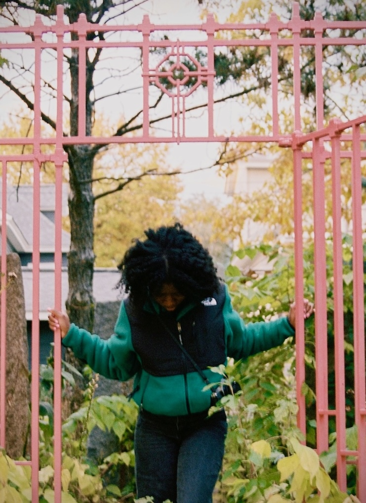

Hello,
software engineer · test automation · photographer
I’m a software engineer with a background in UI automation and front-end development. I’m naturally curious and love learning as I go, both professionally and personally.
I enjoy being on collaborative teams and care about building thoughtful, accessible, and reliable software (and a solid CI/CD pipeline).
I'm also a photographer, and I enjoy how many of the same skills carry over between engineering and photography: attention to detail, iteration, and thoughtful design.
Outside of tech, I spend my time behind a camera, reading, gaming, traveling, or going to concerts! A small collection of my photography lives here: priscillagphoto ↗
✩₊˚.⋆☾⋆⁺₊✧On repeat lately: